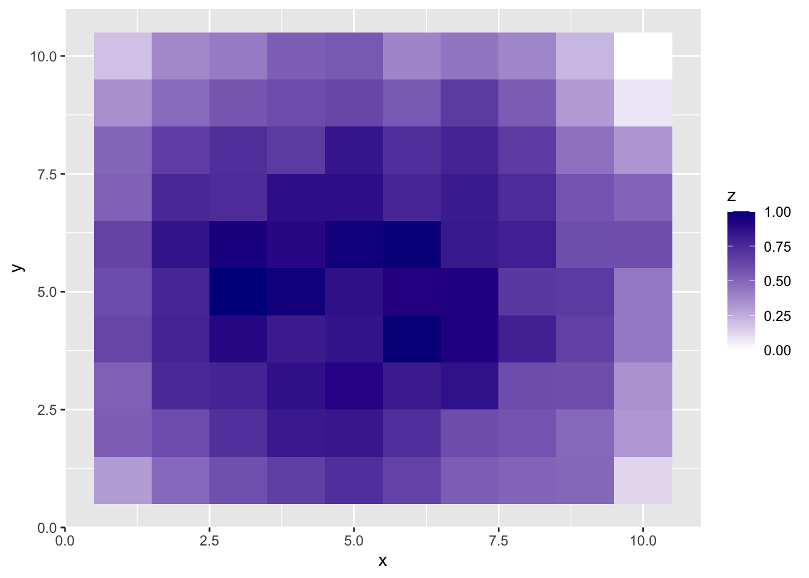
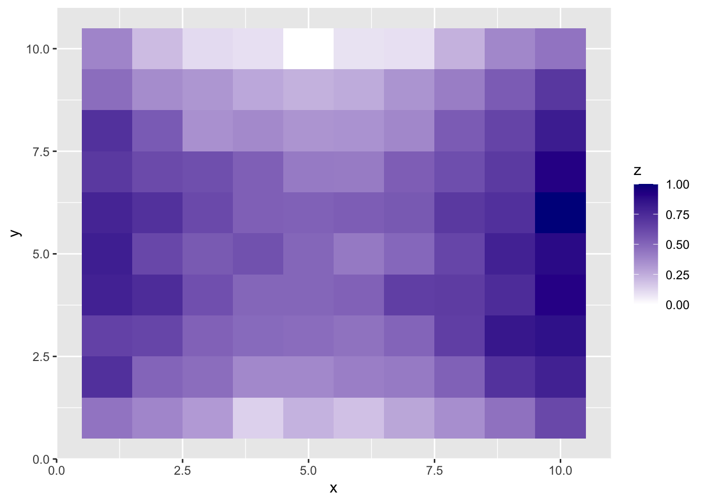
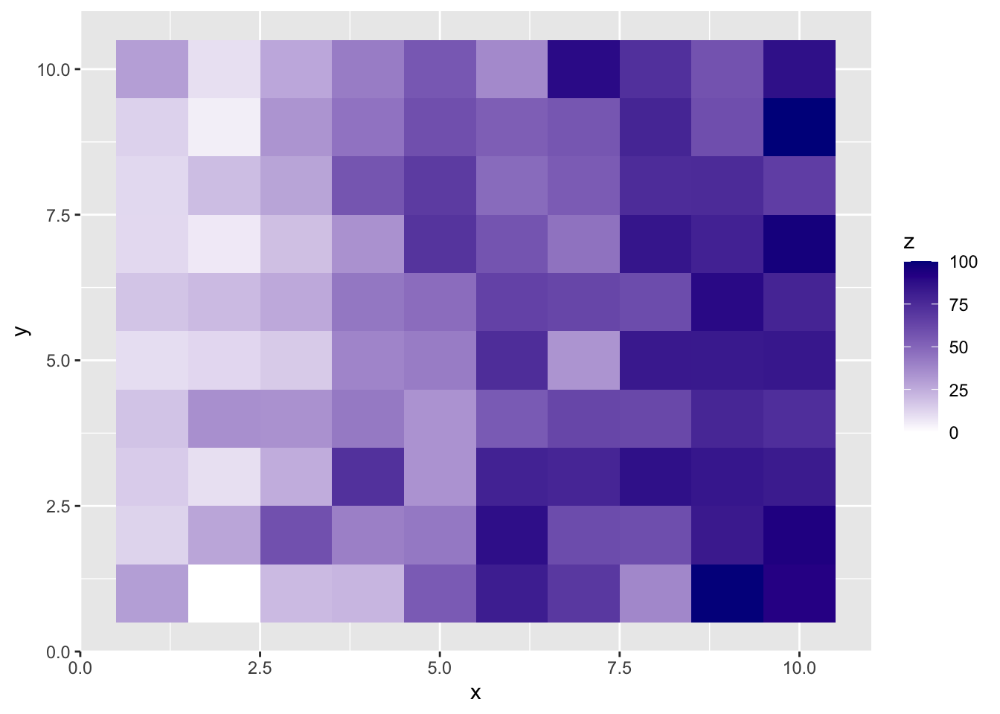
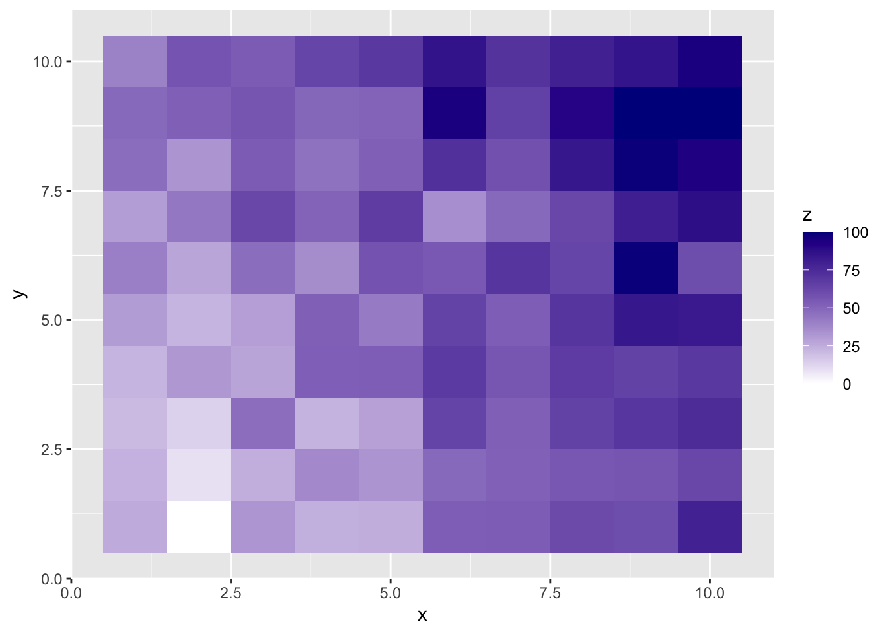
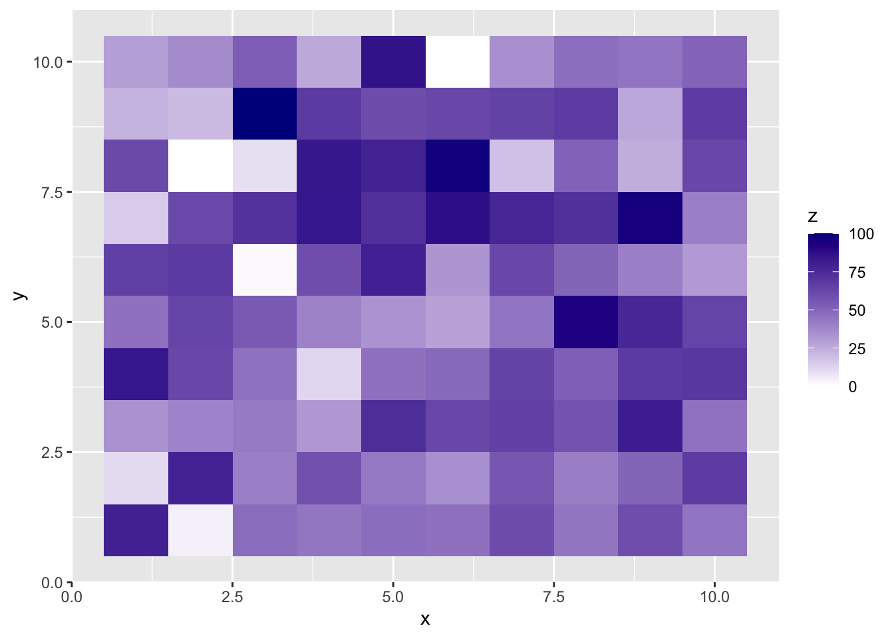

In this document, I will propose an experimental design for comparing 2d and 3d heat maps.
Treatments
Media (2d digital, 3d interactive with color, 3d interactive without color, 3d printed)
Content (unrestricted, correlation matrix)
Unrestricted: no inherent structure in grid
Correlation matrix: matrix of variables with high/low correlations
Ratios (0.1, 0.2, …, 1.0)
Variation (5)
Note: this is where additional structure are introduced, specific to the context
Questions to ask participants
Which value of the marked pair is smaller?
Assume that the larger value of the marked pair is 100 units. Use the slider to estimate the
Using the value that you specified as smaller, identify a location on the grid that
library(agricolae)library(tidyverse)
── Attaching core tidyverse packages ──────────────────────── tidyverse 2.0.0 ──
✔ dplyr 1.1.4 ✔ readr 2.1.5
✔ forcats 1.0.0 ✔ stringr 1.5.1
✔ ggplot2 3.5.1 ✔ tibble 3.2.1
✔ lubridate 1.9.3 ✔ tidyr 1.3.1
✔ purrr 1.0.2
── Conflicts ────────────────────────────────────────── tidyverse_conflicts() ──
✖ dplyr::filter() masks stats::filter()
✖ dplyr::lag() masks stats::lag()
ℹ Use the conflicted package (<http://conflicted.r-lib.org/>) to force all conflicts to become errors
# design.bib(expand_grid(media = 1:4, ratio = 1:10), k = 40)
Content
Unrestricted
# Scaling functionscale0to100 <-function(x){ (x-min(x))/(max(x)-min(x))}x =1:10y =1:10empty_grid <-expand_grid(x,y)set.seed(2104)# Variation 1: Spherical around centerdata_unrestricted_var1 <- empty_grid %>%mutate(z =7^2- (x-5)^2- (y-5)^2+rnorm(100, 0, sd =3),z =scale0to100(z))ggplot(data_unrestricted_var1, aes(x = x, y = y, fill = z)) +geom_tile() +scale_fill_gradient(low ='white', high ='darkblue')

# Variation 2: Saddle Pointdata_unrestricted_var2 <- empty_grid %>%mutate(z =scale0to100((x-5)^2- (y-5)^2+rnorm(100, 0, 3)))ggplot(data_unrestricted_var2, aes(x = x, y = y, fill = z)) +geom_tile() +scale_fill_gradient(low ='white', high ='darkblue')

# Variation 3: Gradient across x onlydata_unrestricted_var3 <- empty_grid %>%mutate(z =scale0to100(2*x +rnorm(100, 0, 3)))ggplot(data_unrestricted_var3, aes(x = x, y = y, fill = z)) +geom_tile() +scale_fill_gradient(low ='white', high ='darkblue')

# Variation 4: Gradient across x and ydata_unrestricted_var4 <- empty_grid %>%mutate(z =scale0to100(2*x + y +rnorm(100, 0, 3)))ggplot(data_unrestricted_var4, aes(x = x, y = y, fill = z)) +geom_tile() +scale_fill_gradient(low ='white', high ='darkblue')

# Variation 5: No structuredata_unrestricted_var5 <- empty_grid %>%mutate(z =scale0to100(rnorm(100, 0, 3)))ggplot(data_unrestricted_var5, aes(x = x, y = y, fill = z)) +geom_tile() +scale_fill_gradient(low ='white', high ='darkblue')

Correlation Matrix
Here, variations are based on the number of correlated variables. First, all variables are assumed to have low
Each grid needs to satisfy the following conditions:
Each pair of values is within 3 to 4 units of each other, as measured by the Manhattan distance
All 10 ratios appear in the grid
Since a random process is used to create data, we need to ensure that the conditions are met. The following function checks these conditions by performing the following steps:
From a proposed data set, get all possible combinations of coordinates and arrange such that the first value is smaller than the second value (to reduce number of computations)
Calculate Manhattan distance of coordinates and ratio of values
Round ratio to closest required ratio (e.g., 0.34 becomes 0.3)
Calculate the difference of the ratio to its closest ratio
Filter by Manhattan distance / distance to closest to ratio
Check that all of the required ratios are within the data set
Return the data set of pairs and statement that conditions are met